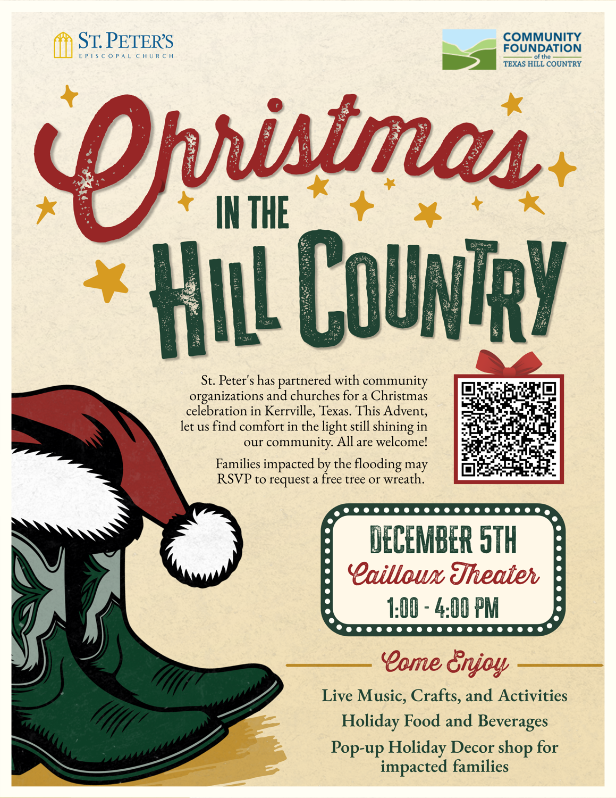

Christmas in the Hill Country / Navidad en Hill Country
Christmas in the Hill Country / Navidad en Hill Country
December 5, 2026, 1 to 4 p.m. Central. Cailloux Theater, 910 Main St., Kerrville. / 5 de diciembre de 2026, de 1 a 4 p. m., hora del centro. Cailloux Theater, 910 Main St., Kerrville.

St. Peter’s Episcopal Church welcomes everyone for live music, crafts, holiday food and drinks. There will be a holiday ornament shop for families affected by flooding. / La Iglesia Episcopal St. Peter’s invita a toda la comunidad a disfrutar de música en vivo, manualidades, comida y bebidas navideñas. Habrá una tienda de adornos navideños para las familias afectadas por las inundaciones.
Flood-affected families can RSVP to request a free tabletop Christmas tree or wreath. A request does not guarantee availability. / Las familias afectadas por las inundaciones pueden usar el formulario para solicitar un arbolito de mesa o una corona navideña sin costo. Una solicitud no garantiza la disponibilidad.
RSVP to request a tree or wreath / Solicitar arbolito o coronaOpen original full flyer / Abrir volante original completo